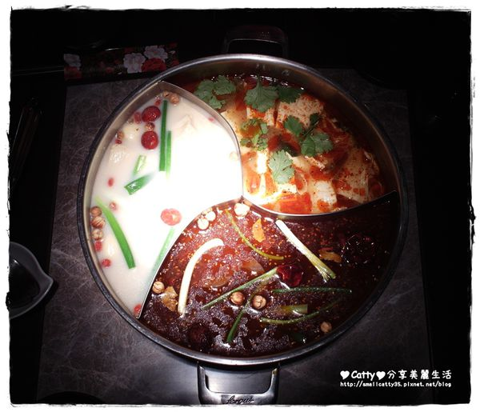
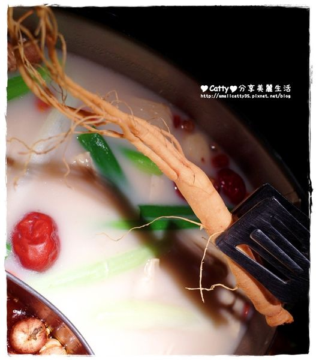
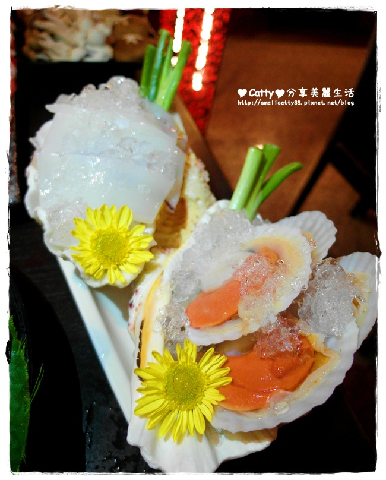

住在桃園6,7年了，每年冬天要吃麻辣鍋，都要踩雷好幾次
不是鍋底味道不OK、就是肉類品質很差、還有遇過海鮮不新鮮的
漸漸的，跟朋友相約聚餐就會跑到台北吃 (下班好累阿)
這次Catty受邀到鍋之舞 頂級麻辣鴛鴦鍋用餐，還約了姊妹們一起
大家舌頭都很厲害，嘴巴評論也都很毒蛇
沒想到吃了竟然讚不絕口，還自己付費加碼狂點了一大堆好料呢
鍋之舞 頂級麻辣鴛鴦鍋，位於林口長庚醫院附近，算是林口的範圍了
不過距離交流道也非常非常近，就算從桃園市區開車也只需要10分鐘
大大的招牌不擔心會錯過
目前店家沒有配合特約停車場，不過店門口的路邊都有停車格可以停車
我喜歡他們的大門，有一種"我要進去練功了"的感覺 ((是要演武俠劇嗎 ))
果然室內的裝潢也是走中國風，不過算蠻樸實，沒有太多華麗的裝潢
店家說，希望用A等級的裝潢，吃A+的食材
走向食材精緻化、價位平民化的麻辣鍋
店長說他們還會再換過菜單 不過很多特色菜、季節限定品項都沒有在菜單裡面出現
來用餐的時候記得向店家詢問，當天有什麼特色食材，也算是驚喜啦

賓士鍋 Catty第一次看到這種造型的麻辣鍋耶，暱稱它叫做賓士鍋
總共有三種鍋底麻辣、南洋泰式酸辣、養生白味
麻辣的鍋底是店家特地到中國重慶學來的喔~ 是用豬骨和雞骨熬製而成
湯頭溫和不刺激，調味上也不會太鹹，可以直接飲用，很適合涮肉
南洋泰式酸辣鍋也是店家出國，遠赴泰國學習回來的
裡面有濃濃的香茅味道，還有其他的香草植物風味
有一點辣度，我覺得很適合煮海鮮
養生白味鍋是使用大陸長白山的人參熬煮，煮蔬菜會變得很鮮甜喔

店家竟然大手筆加入人參耶
如果不喜歡人參味道的朋友，也可以選擇不要加
但是真的很推薦加入喔，湯頭會變得比較厚、層次感也會增加
麻辣鍋的鍋中加入多種中藥材、辣椒一起熬煮
湯底還有鴨血和豆腐都可以免費續加，我愛他們家的豆腐，很入味
試喝了一下麻辣湯頭，麻而不辣，也不會過鹹，蠻不錯的
店家招待的麻辣花生
又辣又麻，好麻喔!!! 我好喜歡，很適合配啤酒喝
頂級進口和牛
媽阿!!! 第一道端出來我口水都要流下來了，這個油花分佈得真美
忍不住再拍一張
肉片size超大!!!! 完全就是比臉還要大的和牛肉
放入鍋中大概涮個5~10秒就可以囉，7分熟的狀態最好吃
有一點淡淡的牛奶香味，而且油脂豐富、入口即化
一整盤肉，馬上就被掃盤了
口味比較重的朋友，可以沾取店家特製的花椒粉+胡椒粉
麻辣的刺激，後勁很強喔，但是吃起來好爽

軟絲蠻新鮮的~ Q中帶脆，我很喜歡
店長說，他一個禮拜會親自跑好幾次基隆的崁仔頂漁市場
挑選魚貨，確保品質
所以店內不時會提供隱藏版菜色，像前一陣子有推出小捲、透抽
會依照魚貨的季節來上菜呦，超棒耶
丸子聯合國
不同口味一次滿足，包括墨魚、香菇、紅麴.....
海老鮮蝦滑、鮮嫩花枝滑
比起丸子，我更愛滑的口感
放一點在麻辣這鍋，放一點在泰式酸辣那鍋，這兩種湯底都很搭
花枝滑比較香，而且咬得到花枝QQ的口感
滑本身的魚漿煮起來很軟嫩，會有一種嫩中還有小顆粒QQ的感覺
我們大家都很愛，後來還又再加點了一次XDDD
甘蔗筍
前面一隻一隻的蔬菜，叫做甘蔗筍，吃起來清甜爽脆
店家很酷，會根據目前季節來出菜
像前一陣子有上綠竹筍、或是筊白筍，大家可以關注店家FB會有訊息
綜合養生鮮蔬，好大一盆，真的是用盆來形容
價位也不高，很划算!!!!
菇菇聯合國
白蝦
使用的也比一般麻辣鍋店的個頭還要大隻喔！當然新鮮度也是加倍啦
太會滷拼盤
好可愛的名稱，這些滷味是店家用自己的麻辣湯底下去滷的喔
所以本身已經有點辣度，只要回鍋加熱一下，就可以吃了
Catty自己不吃內臟，不過同行的朋友說，毛肚軟Q很讚
特別推大腸頭，清理得很乾淨、沒有腥臭味，又Q又嫩，超推薦
用餐到一半，店家會招待果醋，酸酸甜甜去油解膩，我又開胃了XDD
不過只有那一點點大家喝不過癮，加點了一壺手釀烏梅汁
超級大推薦喔
濃郁、酸、甘甜、夠味，而且一大壺才一百多塊，非常划算
喔喔喔~~~ 這一盤端上來，又讓大家驚呼
日出太極，選用特集無骨牛小排，搭配大黃瓜
除了精緻好吃的賓士鍋之外，現在也有推中午的商業套餐呦
這麼多豐富的食材，一個人只要$245，真的很便宜
整體來說，我覺得鍋之舞比較走向精緻單點路線
不過價位又比一般大家熟知的單點名店便宜許多
雖然沒有華麗的裝潢，或是彎腰90度的服務生
卻得到更新鮮、用心、有創意的食材料理，享用美食比裝潢更重要
尤其現在冬天冷颼颼，最需要暖暖一鍋
快相約朋友來鍋之舞聚在一起，不只暖胃也暖心呦

目前店家有推出集點活動
鍋之舞 頂級麻辣鴛鴦鍋
電話：03-3270255
營業時間： 平日 (週一 ~ 週五) 11:30 ~ 15:00，17:30 ~ 22:30 假日11:30 ~ 22:30
消費方式：湯底費每人100元(鍋底無限量供應)，每人低消299元
地址：桃園縣龜山鄉文化三路368號
引用文章:Catty分享美麗生活